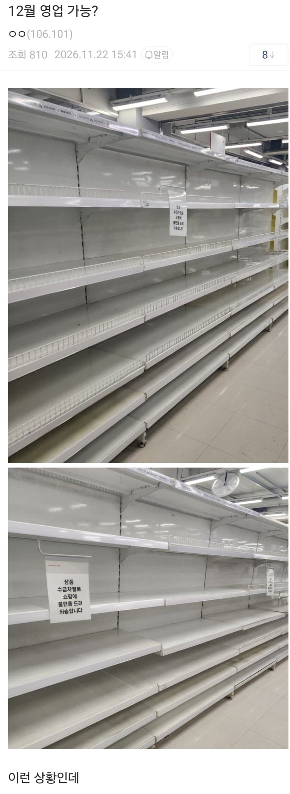
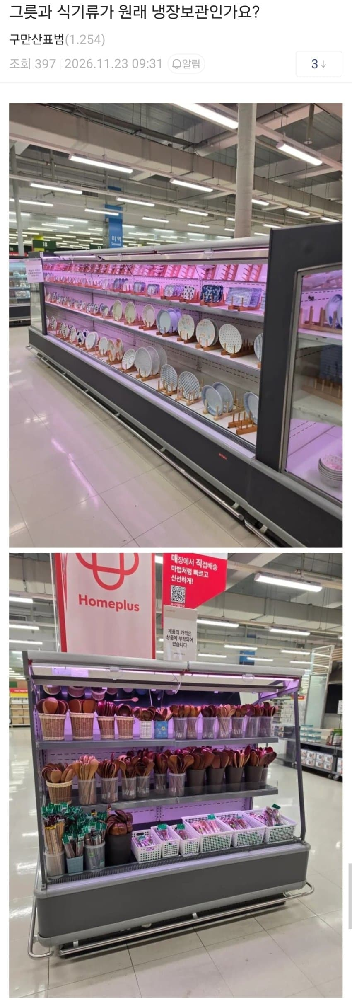
돈없어서 납품대금도 밀림 신용도 없으니 업체들은 선지급 원함 >> 매대 텅텅
이제 끌어올 수 있는 모든 재고 모아서 창고 털이 중
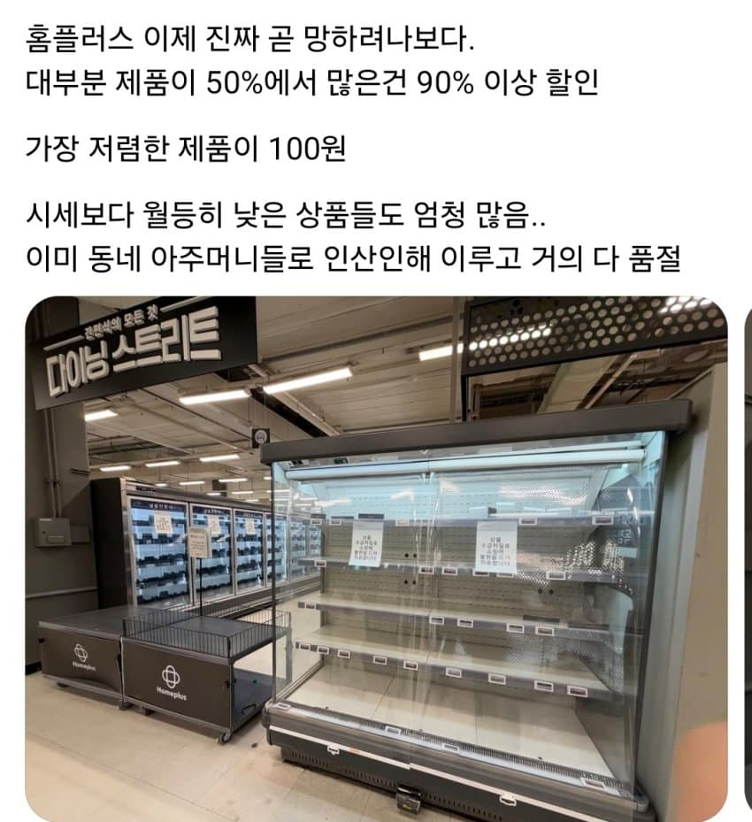
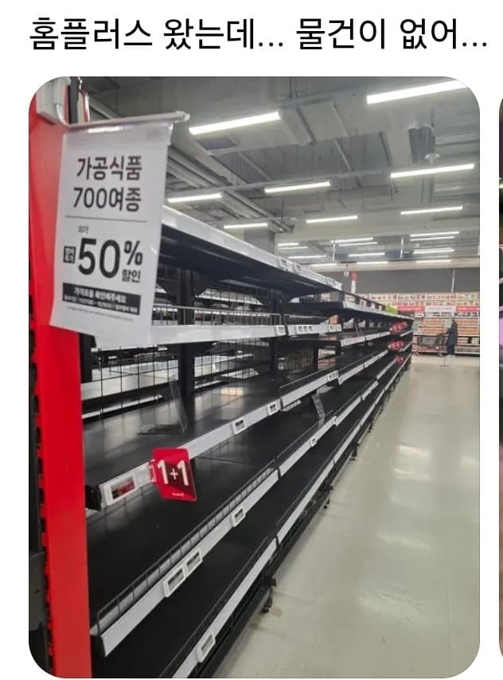
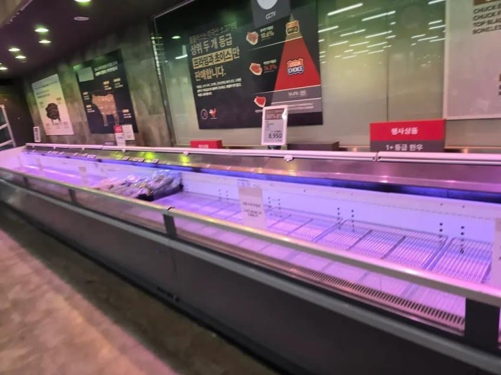
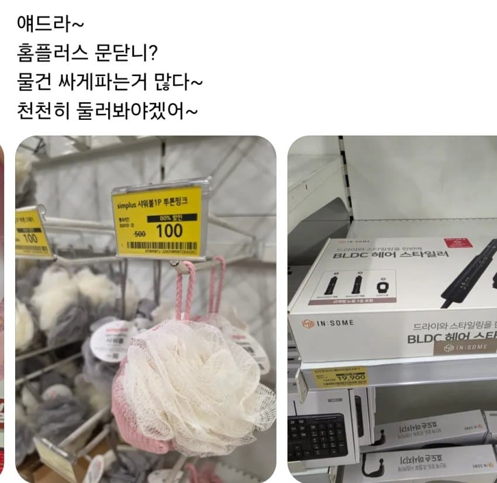
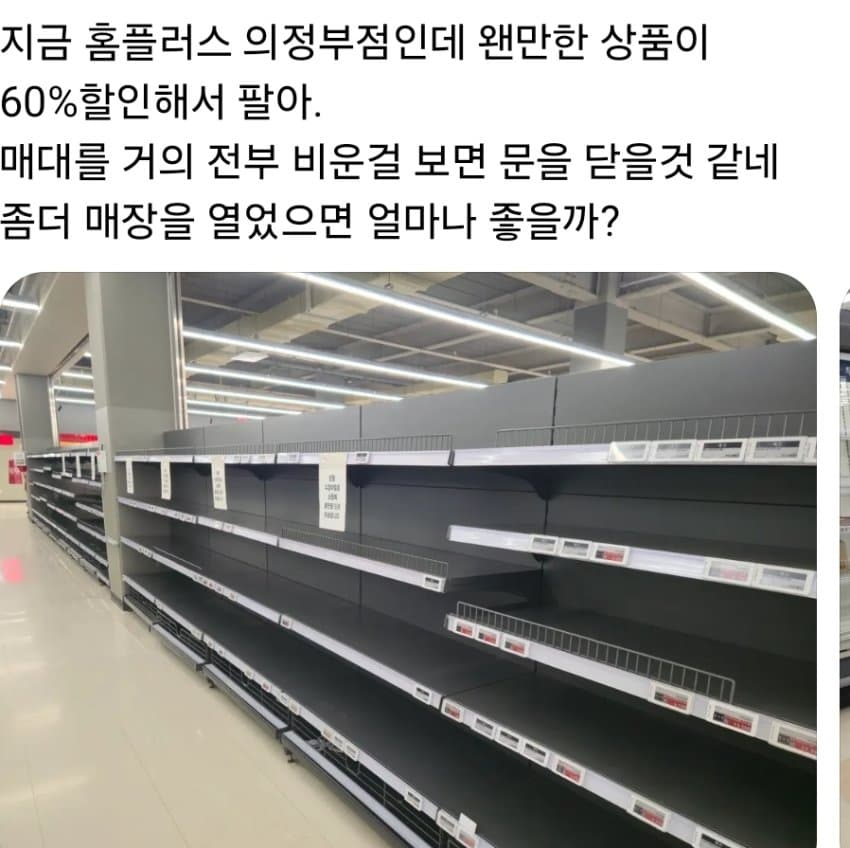
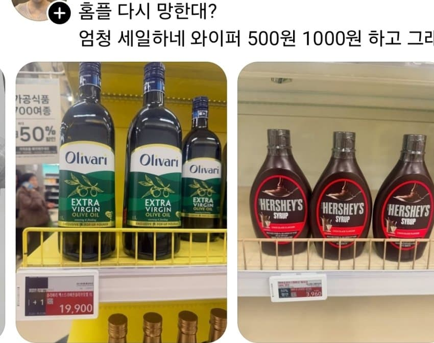
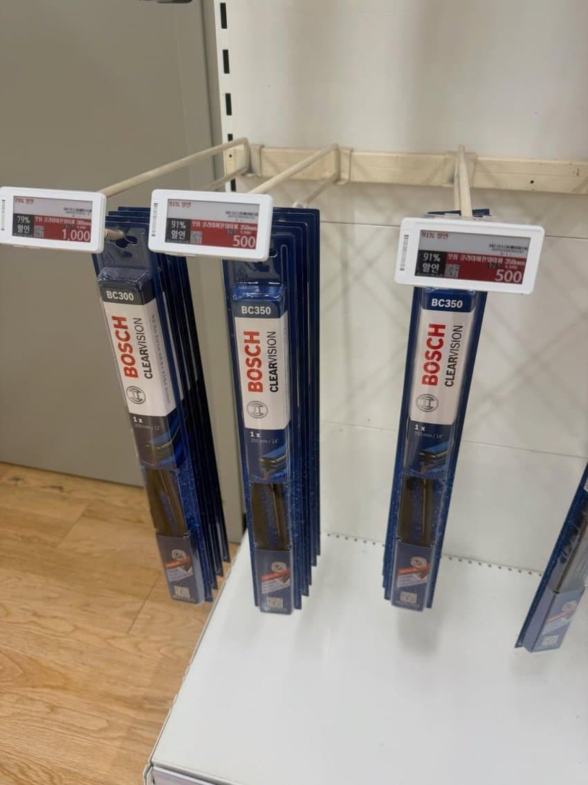
올해 5월 37개 지점 임시 휴업 할 때도 똑같이 창고털이 세일했음 그래서 올해 안에 또 임시 휴업 하는거 아니냐고
말 나오는 중
이미 3개월 전 2천억 긴급 수혈 했어도 아직 2조 이상의 돈이 더 필요 한 상황
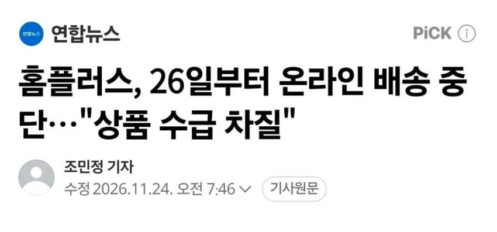
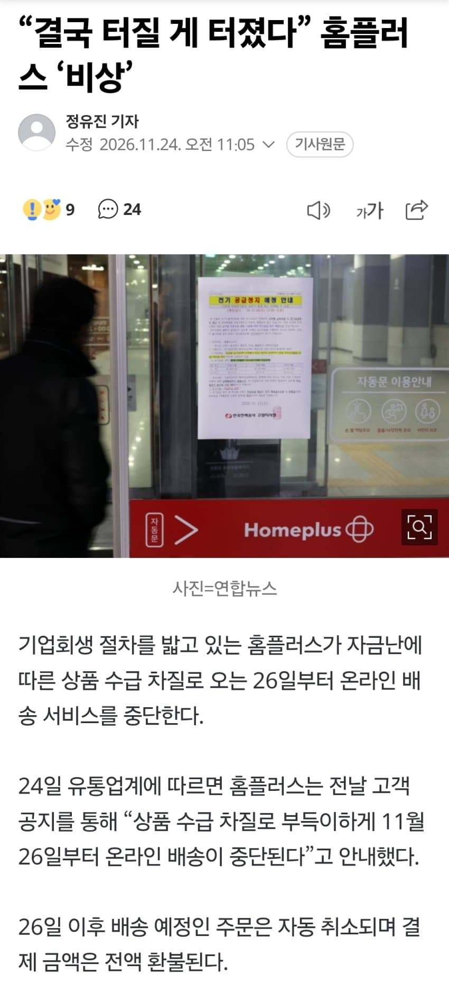
온라인 배송도 곧 막힌다하고
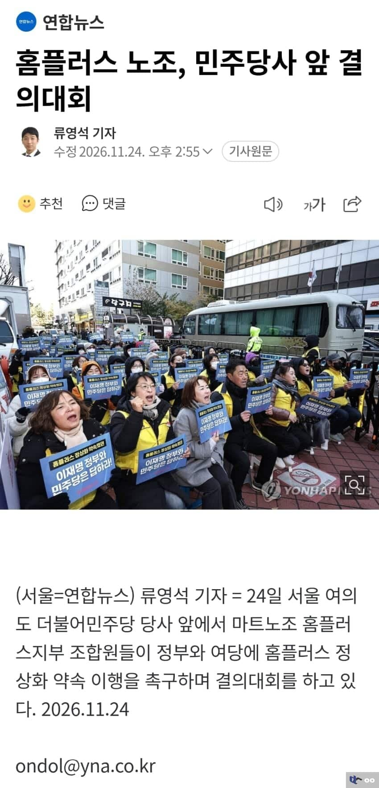
노조들은 계속 시위 중
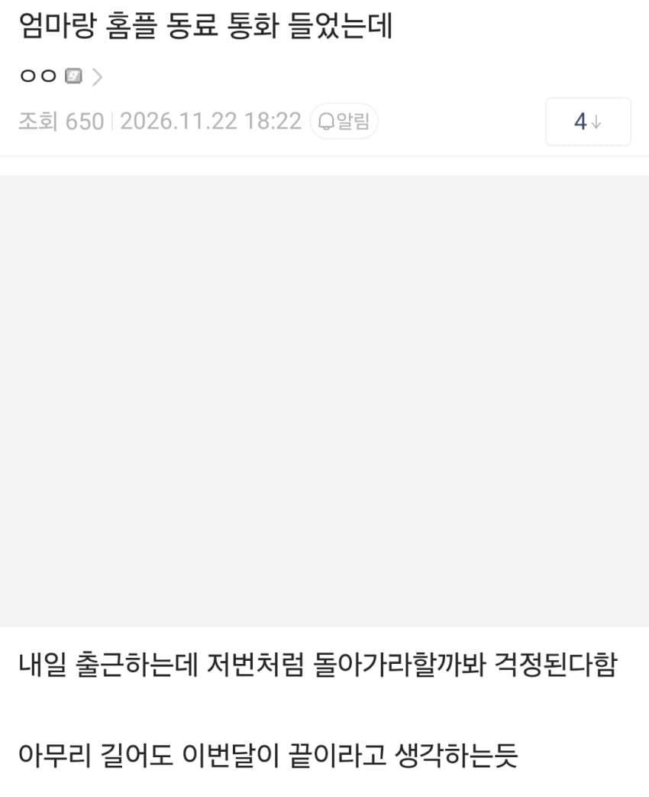
직원들도 출근하지 말라고 할까봐 불안에 떠는 중
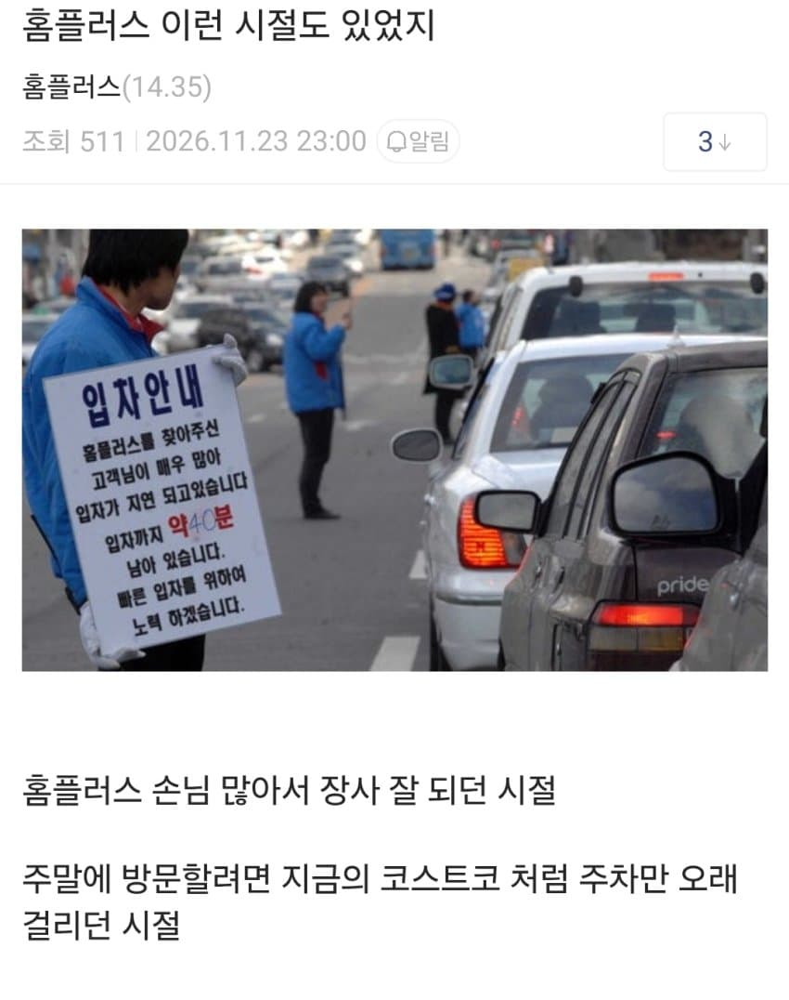
과거 주말만 되면 인산인해였던 영광이 그립다고...
- dc official App
댓글
수집 당시 댓글 168개
· ㅇㅇ · 11.25 20:40:10
· ㅇㅇ · 11.25 20:42:18
· ㅇㅇ · 11.25 20:42:53
· ㅇㅇ · 11.25 20:44:17
· ㅇㅇ · 11.25 20:59:28
ㅇㅇ · 11.25 20:36:39
· ㅇㅇ · 11.25 20:41:19
ㅇㅇ · 11.25 20:37:06
· ㅇㅇ · 11.25 20:38:52
· ㅇㅇ · 11.25 20:38:53
ㅇㅇ · 11.25 20:37:07
· ㅇㅇ · 11.25 20:37:24
ㅇㅇ · 11.25 20:37:18
ㅇㅇ · 11.25 20:37:21
ㅇㅇ · 11.25 20:37:40
· z · 11.25 20:39:49
· ㅇㅇ · 11.25 20:41:07
· ㅇㅇ · 11.25 20:52:13
· ㅇㅇ · 11.25 20:52:46
ㅇㅇ · 11.25 20:38:11
Adriel · 11.25 20:38:16
· Adriel · 11.25 20:38:26
· 프븨 · 11.25 20:42:50
ㅇㅇ · 11.25 20:38:20
일해라 · 11.25 20:38:23
z · 11.25 20:38:50
ㅇㅇ · 11.25 20:39:00
ㅇㅇ · 11.25 20:39:16
베갤러 · 11.25 20:39:19
좌파새끼들 뭐하노? 암살자 홈플가야지
ㅇㅇ · 11.25 20:39:33
ㅇㅇ · 11.25 20:40:27
ㅇㅇ · 11.25 20:40:47
· z · 11.25 20:43:39
· ㅇㅇ · 11.25 20:44:00
ㅇㅇ · 11.25 20:40:59
ㅇㅇ · 11.25 20:41:22
ㅇㅇ · 11.25 20:41:56
ㅇㅇ · 11.25 20:42:15
ㅇㅇ · 11.25 20:42:16
· z · 11.25 20:43:15
· ㅇㅇ · 11.25 20:59:59
z · 11.25 20:42:59
ㅇㅇ · 11.25 20:43:26
ㅇㅇ · 11.25 20:44:19
ansav454 · 11.25 20:44:21
ㅇㅇ · 11.25 20:44:31
· ㅇㅇ · 11.25 20:45:21
ㅇㅇ · 11.25 20:44:46
· ㅇㅇ · 11.25 20:45:59
· ㅇㅇ · 11.25 20:58:57
ㅇㅇ · 11.25 20:45:10
ㅇㅇ · 11.25 20:45:59
딱등 · 11.25 20:46:24
ㅇㅇ · 11.25 20:46:33
ㅇㅇ · 11.25 20:47:42
kawa · 11.25 20:47:44
ㅇㅇ · 11.25 20:47:55
ㅇㅇ · 11.25 20:47:56
ㅇㅇ · 11.25 20:48:15
ㅇㅇ · 11.25 20:48:16
ㅇㅇ · 11.25 20:48:23
ㅇㅇ · 11.25 20:49:06
z · 11.25 20:49:28
· ㅇㅇ · 11.25 20:51:52
· 해석가 · 11.25 20:56:25
· ㅇㅇ · 11.25 20:58:33
· ㅇㅇ · 11.25 21:03:12
· 해석가 · 11.25 21:05:22
ㅋㅅㄱㄴ · 11.25 20:49:32
ㅇㅇ · 11.25 20:49:48
· ㅇㅇ · 11.25 21:04:36
ㅇㅇ · 11.25 20:49:55
ㅇㅇ · 11.25 20:50:28
ㅇㅇ · 11.25 20:51:26
ㅇㅇ · 11.25 20:51:31
· ㅇㅇ · 11.25 20:56:16
· 해석가 · 11.25 20:59:35
· ㅇㅇ · 11.25 21:03:52
ㅇㅇ · 11.25 20:51:55
· ㅇㅇ · 11.25 20:52:15
ㅇㅇ · 11.25 20:52:40
ㅇㅇ · 11.25 20:53:11
ㅇㅇ · 11.25 20:53:14
찬스킴 · 11.25 20:54:58
ㅇㅇ · 11.25 20:55:17
Vooqqqqld · 11.25 20:56:33
d · 11.25 20:56:39
ㅇㅇ · 11.25 20:56:43
ㅇㅇ · 11.25 20:57:21
ㅇㅇ · 11.25 20:58:34
ㅇㅇ · 11.25 20:58:44
· ㅇㅇ · 11.25 20:58:55
ㅇㅇ · 11.25 20:59:50
ㅇㅇ · 11.25 21:00:39
좌좡면한그륵뭐그런쇼망 · 11.25 21:01:16
ㅇㅇ · 11.25 21:02:27
티뀨 · 11.25 21:03:43
ㅇㅇ · 11.25 21:04:30
pyuru · 11.25 21:04:50
pyuru · 11.25 21:05:08
ㅇㅇ · 11.24 22:00:36
마유미 · 11.24 22:01:03
· ㅇㅇ · 11.24 22:01:23
· ㅇㅇ · 11.24 22:01:33
ㅇㅇ · 11.24 22:01:52
· aa · 11.25 20:35:07
· ㅇㅇ · 11.25 20:39:50
ㅇㅇ · 11.24 22:01:56
· ㅇㅇ · 11.24 22:03:07
· milan · 11.24 22:03:42
· ㅇㅇ · 11.24 22:08:56
· ㅇㅇ · 11.24 22:10:03
· 씹덕 · 11.24 22:10:27
· ㅇㅇ · 11.24 22:12:02
· ㅇㅇ · 11.24 22:13:08
· ㅇㅇ · 11.25 20:54:50
ㅇㅇ · 11.24 22:02:00
· ㅇㅇ · 11.24 22:02:21
· ㅇㅇ · 11.24 22:07:10
· ㅇㅇ · 11.24 22:08:57
ㅇㅇ · 11.24 22:02:05
ㅇㅇ · 11.24 22:03:19
milan · 11.24 22:03:35
ㅇㅇ · 11.24 22:04:01
ㅇㅇ · 11.24 22:06:47
필스너우르켈 · 11.24 22:09:01
ㅇㅇ · 11.24 22:11:11
· ㅇㅇ · 11.25 20:35:59
ㅇㅇ · 11.24 22:12:00
· ㅇㅇ · 11.25 20:53:09
봇치쟝 · 11.25 20:31:01
· ㅇㅇ · 11.25 20:57:23
ㅇㅇ · 11.25 20:31:48
ㅇㅇ · 11.25 20:31:51
ㅇㅇ · 11.25 20:31:52
· 소설쟁이 · 11.25 20:36:16
ㅇㅇ · 11.25 20:31:59
ㅇㅇ · 11.25 20:32:16
ㅇㅇ · 11.25 20:32:30
ㅇㅇ · 11.25 20:32:36
ㅇㅇ · 11.25 20:33:33
192.168.* · 11.25 20:33:41
ㅇㅇ · 11.25 20:33:59
· ㅇㅇ · 11.25 20:37:02
ㅇㅇ · 11.25 20:34:02
샨테 · 11.25 20:34:26
· ㅇㅇ · 11.25 20:35:10
· 프븨 · 11.25 20:43:03
ㅇㅇ · 11.25 20:34:36
· 샨테 · 11.25 20:35:48
· 프븨 · 11.25 20:43:08
ㅇㅇ · 11.25 20:34:38
· ㅇㅇ · 11.25 20:36:48
ㅇㅇ · 11.25 20:34:46
ㅇㅇ · 11.25 20:35:06
황족 · 11.25 20:35:12
· 샨테 · 11.25 20:39:19
· 황족 · 11.25 20:39:36
ㅇㅇ · 11.25 20:35:20
· ㅇㅇ · 11.25 20:48:29
히이잉 · 11.25 20:35:24
ㅇㅇ · 11.25 20:35:24
ㅇㅇ · 11.25 20:35:44
ㅇㅇ · 11.25 20:35:51
ㅇㅇ · 11.25 20:35:58
ㅇㅇ · 11.25 20:36:22
MR4오너 · 11.25 20:36:23
ㅇㅇ · 11.25 20:36:39